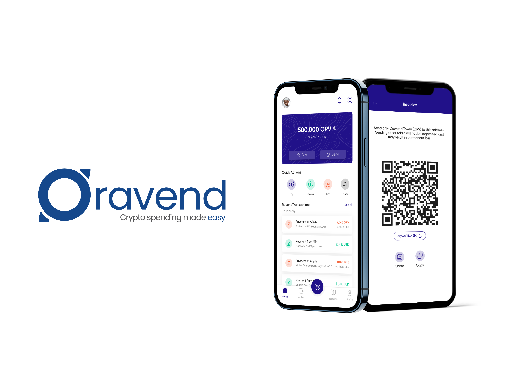

Featured Projects
A selection of my recent work showcasing design process and outcomes

SomaGifts Shopping Experience
Led redesign of core shopping and delivery experience, simplifying checkout flows and introducing real-time order tracking. Result: Reduced the volume of support tickets from heavy weekly loads to a manageable level within six months.

Skill4Cash Dual-Sided Marketplace
Designed a dual-sided marketplace that made it easier for skilled service providers to be discovered, increasing daily visibility. Result: 15% increase in customer connection requests and app rating improved from 2.0 to 3.5 through iterative usability testing and progressive disclosure onboarding.

Oravend Crypto Platform
Supported design of multi-currency information architecture and intuitive crypto workflows for non-technical users. Collaborated with blockchain engineers to simplify complex transaction flows and improve usability for a global audience.

Scaffolding Access to Mental Health Records in Ireland
Master's level project designing a system to improve access to mental health records in Ireland. Applied Human-Computer Interaction principles, AI Ethics, and Advanced UX Research Methodologies with strong emphasis on accessibility and human-centred design.

MetaData
Designed a comprehensive data management platform focusing on simplifying complex data interactions. Applied user-centered design principles to create intuitive interfaces that improve user workflows and reduce cognitive load in data-heavy environments.

Kona
Kona is a cross-border mobile payment app that allows users to send and receive money internationally using only their local currency. For example, a user in Nigeria can send money in naira (NGN), while the recipient in the United States receives the funds instantly in USD or USDT, without needing a domiciliary account.